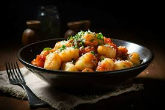
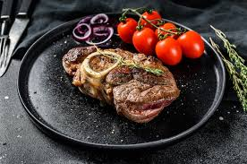
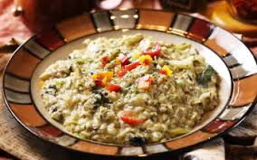
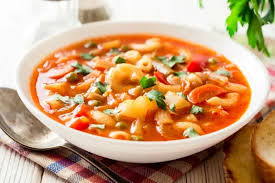
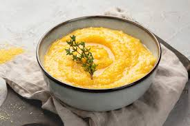

Pizza
Hamur, domates sosu ve mozzarella ile hazırlanır.
Malzemeler
- Un: 500 g
- Su: 300 ml
- Kuru maya: 7 g
- Tuz: 10 g
- Şeker: 10 g
- Zeytinyağı: 30 ml
- Domates sosu: 150 g
- Mozzarella peyniri: 200 g
Tarif
- Maya, su, şeker ve biraz unu karıştırarak aktifleşmesini bekleyin.
- Tuzu ve zeytinyağını ekleyerek pürüzsüz bir hamur yoğurun.
- Hamuru 1 saat mayalandırın.
- Hamuru açarak üzerine domates sosu sürün.
- Mozzarella dilimlerini yerleştirip önceden ısıtılmış 220°C fırında 10-12 dakika pişirin.
- Fesleğen yaprakları ile süsleyerek servis edin.
Lazanya
Makarnalar, kıyma ve beşamel sos ile kat kat hazırlanır.
Malzemeler
- Lazanya yaprakları: 500 g
- Kıyma: 400 g
- Domates püresi: 400 g
- Soğan: 100 g
- Sarımsak: 2 diş
- Beşamel sos:
- Tereyağı: 50 g
- Un: 50 g
- Süt: 500 ml
- Mozzarella: 200 g
- Parmesan: 50 g
Tarif
- Soğan ve sarımsağı kavurun, kıymayı ekleyip soteleyin.
- Domates püresi ekleyip 15 dakika kaynatın.
- Beşamel sos için tereyağını eritip unu kavurun, sütü ekleyip yoğunlaşana kadar karıştırın.
- Fırın kabına sırayla lazanya yaprağı, kıymalı sos, beşamel sos ve peynir ekleyin.
- Katmanları tamamlayıp 180°C fırında 30-40 dakika pişirin.
Bruschetta

Ekmek üstü domates ve zeytinyağı ile servis edilir.
Malzemeler
- Ekmek dilimleri: 8 dilim
- Domates: 4 adet (200 g)
- Sarımsak: 2 diş
- Zeytinyağı: 40 ml
- Taze fesleğen: 10 yaprak
- Tuz: 5 g
- Karabiber: 2 g
Tarif
- Domatesleri küçük küpler halinde doğrayın, fesleğenle karıştırın.
- Ekmekleri kızartın, üzerlerine sarımsak sürün.
- Domates karışımını ekmeklerin üzerine koyup zeytinyağı gezdirin.
- Tuz ve karabiber serpip servis edin.
Gnocchi
Patates ve un ile hazırlanan küçük hamur topları.
Malzemeler
- Patates: 500 g
- Un: 150 g
- Yumurta: 1 adet
- Tuz: 5 g
Tarif
- Patatesleri haşlayıp ezin, soğuyunca un ve yumurta ile yoğurun.
- Hamuru silindir şeklinde yuvarlayıp 2 cm'lik parçalar kesin.
- Kaynar suya atıp yüzeye çıkınca alın.
- Sosla karıştırıp servis edin (örneğin domates sosu veya tereyağı-sarımsak sosu).
Saltimbocca
Et, adaçayı ve jambon ile lezzetlendirilir.
Malzemeler
- Dana bonfile: 400 g (8 dilim)
- Prosciutto (İtalyan jambonu): 8 dilim
- Adaçayı: 8 yaprak
- Un: 50 g
- Beyaz şarap: 100 ml
- Zeytinyağı: 20 ml
- Tereyağı: 20 g
Tarif
- Et dilimlerinin üzerine prosciutto ve adaçayı yaprağı koyup kürdanla sabitleyin.
- Hafifçe una bulayın ve yağda her iki tarafını kızartın.
- Tavaya beyaz şarap ekleyip sos haline getirin.
- Etleri sosla birlikte servis edin.
Osso Buco
Dana incik ve sebzelerle hazırlanan geleneksel yemek.
Malzemeler
- Dana incik: 4 dilim (1 kg)
- Soğan: 1 adet (150 g)
- Havuç: 1 adet (100 g)
- Kereviz: 2 sap (100 g)
- Domates püresi: 200 g
- Et suyu: 500 ml
- Zeytinyağı: 30 ml
Tarif
- Dana incikleri una bulayıp mühürleyin.
- Soğan, havuç ve kerevizi kavurun.
- Domates püresi ve et suyunu ekleyip 2 saat kısık ateşte pişirin.
- Servis sırasında gremolata (maydanoz, sarımsak, limon kabuğu) serpiştirin.
Risotto
Kremamsı pirinç yemeği, sebzelerle servis edilir.
Malzemeler
- Arborio pirinci: 300 g
- Soğan: 50 g
- Sarımsak: 1 diş
- Beyaz şarap: 100 ml
- Et/tavuk suyu: 1 litre
- Parmesan: 50 g
- Tereyağı: 50 g
- Zeytinyağı: 20 ml
Tarif
- Soğan ve sarımsağı kavurun, pirinci ekleyip 2 dakika çevirin.
- Beyaz şarap ekleyip çektirin, ardından azar azar sıcak et suyunu ekleyerek pişirin.
- Tereyağı ve parmesan ile karıştırıp servis edin.
Minestrone
Çeşitli sebzelerle yapılan bir İtalyan çorbası.
Malzemeler
- Çeşitli sebzeler (havuç, kabak, kereviz, fasulye): 500 g
- Domates püresi: 200 g
- Tavuk suyu: 1 litre
- Zeytinyağı: 30 ml
- Makarnacık: 50 g (isteğe bağlı)
- Tuz, karabiber: Tatlandırmak için
Tarif
- Sebzeleri doğrayıp kavurun.
- Domates püresi ve tavuk suyunu ekleyip 20 dakika pişirin.
- Makarnayı ekleyip yumuşayana kadar pişirin.
- Tuz ve karabiberle tatlandırıp servis edin.
Polenta
Mısır unu ile yapılan geleneksel bir İtalyan yemeği.
Malzemeler
- Mısır unu: 200 g
- Su: 800 ml
- Tereyağı: 30 g
- Parmesan: 50 g
- Tuz: 5 g
Tarif
- Suyu kaynatın, tuz ekleyin ve yavaşça mısır ununu karıştırarak ekleyin.
- Sürekli karıştırarak 30 dakika pişirin.
- Tereyağı ve parmesan ekleyerek karıştırın.
- Düz bir yüzeye döküp dilimleyerek servis edin.